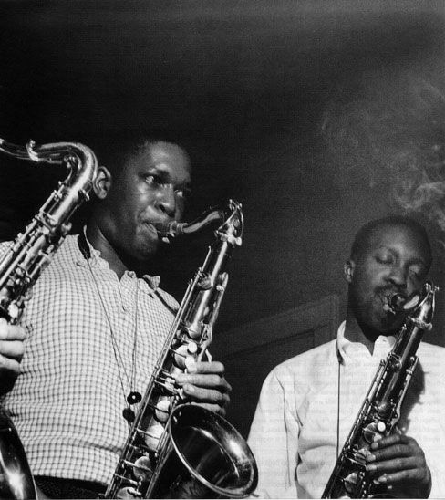
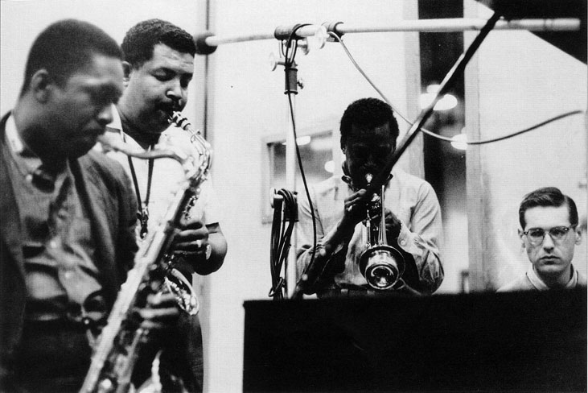
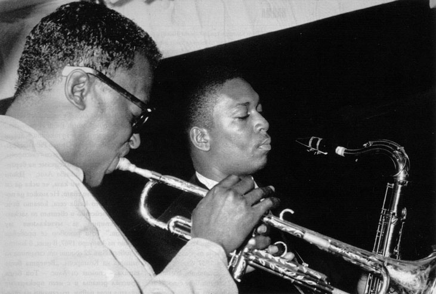
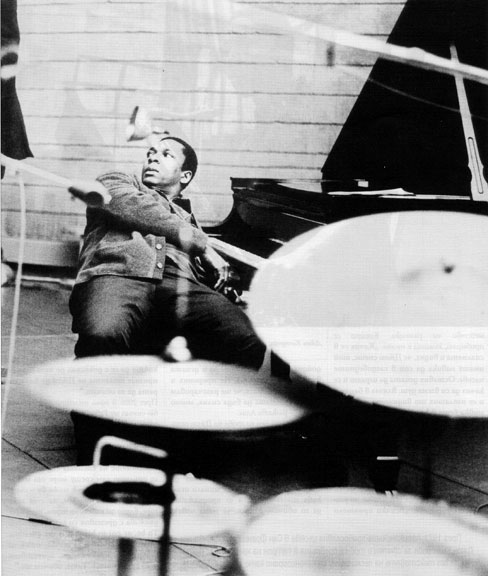
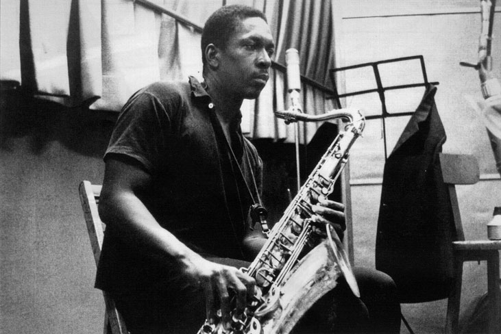
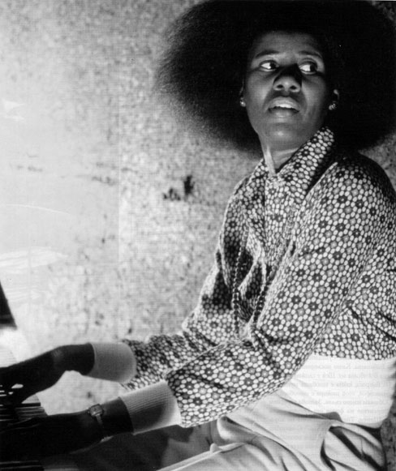

Джон Колтрейн
Джон Колтрейн
Hоvег Street 840. Градчето Хамлет в Северна Каролина. През 1926-а там почти винаги се разнася музика. Вечерта на 22 септември е дъждовна. В малката кьщичка на края на улицата пред пианото седи бременна жена. Ръцете й се разхождат по клавишите и свирят фрагменти от Membra Jesu Nostri на немския композитор Букстехуде. От устата й излиза чуден глас. Това е Алис. Вече е късно и тя решава да приключи с музиката. Домът притихва и потъва в мрак. 45 минути по-късно в 2 часа и 35 минути плач на новородено нарушава тишината в дома. Ражда се Джон Колтрейн, човекът, който цял живот ще се лута между Бога, джаза, любовта и кокаина. Човекът, който малко преди смъртта си ще каже: „Моята музика е духовен израз на това, което съм аз, на моето знание, на моето битие. Когато започнеш да виждаш възможностите на музиката, изпитваш желание да помогнеш на хората да се освободят от самоограниченията си. Аз искам музиката ми да говори на душите на хората." Семейство Колтрейн не е обикновеното негърско семейство от първата

Джони Грифин, Джон Колтрейн и Ханк Мобли записват албума на Грифин Blowing Session, 6 април 1957
половина на миналия век - бедно, гонено и дискриминирано. То живее сред белите общности и се радва на тяхното уважение. Самият Джон има спокойно детство без сътресения и проблеми. С изключение на факта, че под един покрив съжителстват цели четири поколения на рода Колтрейн. И макар да има спречквания помежду им, те остават обединени от две неща - религията и музиката. „В моя род всички бяха музиканти. Разбира се, имаше изключения, като дядо ми, който работеше в абатството. Мама беше органистка там. Татко, освен че шиеше дрехите на цялото семейство, свиреше и на цигулка. Другият ми дядо свиреше на флейта. Музикална фамилия. Има ли начин и аз да не бъда омагьосан от музиката?" - казва Джон. В ранните си детски години Джон трябва да понесе раздялата с баща си. На 2 януари 1939 той умира от рак на стомаха. „Много хора не ми вярват, но аз помня погребението на баща си като на филм. Мама ме държеше за ръка и когато спуснаха ковчега в гроба, тя ми каза: А сега вземи буца пръст и я пусни. Наведох се над дупката и вместо да пусна шепа пръст, паднах вътре." В рамките на следващия месец умират баба му, дядо му и чичо му. Това кара Алис да напусне градчето и заедно с Джон да се отправят към Филаделфия. Там младият Колтрейн прави първите си стъпки в света на музиката. Майка му разказва: „Започна да ходи на училище, а вечер посещаваше музикални курсове по саксофон и музикална теория." Скоро той се превръща в атракция на училищния оркестър.

Джон Колтрейн, Майлс Дейвис, Бил Евънс записват 58 Miles, Ню Йорк, 26 май 1958
„Джон Колтрейн е бъдещо име в джаза" - оповестява местен вестник през 1944. Веднага щом завършва училище, Джон постъпва на служба във Военноморските сили на остров Оаху. Три години преди това, на 7 декември 1941 година, японските военни части нападат намиращата се там американска военновъздушна база Пърл Харбър, което става повод САЩ да се включат във Втората световна война. Въпреки това едногодишният престой на Джон в Оаху се оказва повече от благодатен. „Тук разбирам, че не каква да е музика, а именно джаз тече във вените ми - пише той в едно от писмата си. - Свирим денонощно с още няколко момчета моряци и мисля, че това е посоката, която ще избера." Там той прави и първия си музикален запис в апаратната на диспечерския пункт. В доклад на управляващия базата по това време пише: „Едно черно момче, Джон Колтрейн, дойде при мен заедно с трима моряци на 13 юли 1946. Погледна ме право в очите и ме запита: Бихте ли имали нещо против, ако днес направим запис в радио кабината на базата. Няма да е дълъг, не повече от 5 минути. Едва ли ще ни нападнат точно в този интервал от време" Така само за 5 минути Колтрейн записва парчето на джаз композитора Тед Дамерън Горещата Къща. Запис, който ще се появи едва през 1993 година и ще превземе всички радио класации. В края на август Джон напуска базата и се завръща във Флорида. Там той продължава музикалното си обучение и си намира работа като саксофонист в местен клуб. Бързо печели слава и започва да осъществява записи с големите имена на джаза - Денис Сандоле, Еди Винсон, Дизи Гилеспи, Ърл Бостик и Джони Ходжес. Малко преди началото на 50-те се запознава с джаз легендата Майлс Дейвис. Славата на Колтрейн расте. Еуфорията около личността му завладява стотици хора. Успехът е неочакван и от самия Джон, а това, както винаги, носи лоши последствия.

Майлс Дейвис с тенорсаксофонистът Джон Колтрейн, 1958
„За мен това бяха хероинът, алкохолът и цигарите. Пушех по две кутии на ден, изпивах поне литър твърд алкохол, а белият прах беше за лека нощ" - казва Джон. „Джон не пропускаше възможност да се докара до безпаметност, така забравяше той - разказват негови колеги. - Не идваше на репетииии, а понякога проваляше цели участия. Затова сменяше бандите, в които свиреше всеки месец. Всички го искаха, но едновременно с това го отбягваха. Тъжна приказка си беше измислил." Въпреки жестоката депресия той не престава да учи саксофон при Матю Растели и музикална теория при Денис Сандоле. Сандоле задълбочава познанията на Колтрейн за хармонията, композиционните принципи и творчеството на композитори като Дебюси, Равел, Барток и Хиндемит. Самият Сандоле казва: „Той можеше да злоупотребява с наркотици, но никога не загуби ентусиазма си да учи. Мисля, че точно заради тази нестихваща жажда за знание успя да покори толкова сърца." Тези седем години не успяват да го откьснат и от религията. „Случваше се да ходя в неделя на църква в такова безобразно състояние, че сега, когато се сещам, се срамувам от себе си. За мен Бог винаги е бил всичко. Мисля, че ако не беше той, аз нямаше да съм сред живите днес" - споделя Джон през 60-те. Но оцеляването на Джон се оказва заслуга на една внезапна любов. В живота му се появява Хуанита Найма Грюб. Двамата не мислят много и месец след първата си среща застават пред олтара в една малка катедрала. Единствените свидетели са Майлс Дейвис и един послушник на свещеника, който ще ги венчае. Денят е З октомври 1955. Сбещеникът поглежда документите на нетърпеливите и остава озадачен: „Тя изповядваше исляма, а той християнството. Не можкех да ги венчая." След два часа те са в общината и сключват граждански брак. Свидетели са пазачът на общината Роджър Барес и Майлс Дейвис.

Джон Колтрейн в почивка между записите, 1964
Този прибързан брак всъщност се оказва спасителната лодка за Джон. Найма е непрекъснато до него, подкрепя го във всяка негова инициатива и най-важното - любовта й се превръща за Джон в бариера срещу хероина. Техните взаимоотношения са много повече от обикновена любов. Според официалните документи Колтрейн никога не се е подлагал на обрязване. Според Левис Портер, автор на книгата John Coltrane: His Life and Music, Джон никога не е променял религиозната си принадлежност. През 1957, когато се твърди, че Колтрейн е приел исляма, в едно интервю самият той казва: „Будизъм, кабала, ислям. Всички религии, взети вкупом, не са способни да изместят моя Бог." Твърдението, че любовта трае три години, се оказва невярно. Със сигурност любовта може да издържи поне осем. Толкова лета изминават, когато се появяват и първите пукнатини във взаимоотношенията между Джон и Найма. През 1963 Джон се запознава с жена, която не само прилича външно на собствената му майка, но е и виртуозен пианист като нея, и... се казва също Алис. Фройд навярно би описал това като синдром на Електра, а според Колтрейн: „Това беше любов от пръв поглед. Когато я видях, не можех да повярвам, че е възможно чужда жена да разтупти така сърцето ми." Два месеца по-късно Джон разтрогва брака си с Найма и застава отново пред олтара, този път с Алис. В катедралата се разнася сватбеният марш на Менделсон. За първи път Колтрейн разбира какво представлява истинският семеен живот. Често в първите дни след сватбата той се шегува: „Сега наистина мога да кажа, че съм мъж." Нищо, че вече е навършил 37. Алис произхожда от семейство на музиканти, което има общо седем деца. Тя поема първата глътка въздух на 27 август 1937 година в Детройт. Сяда пред пианото, когато е едва на 4, а на 12 години вече е по джаз клубовете и акомпанира на най-големия си брат, който свири на саксофон. През 1959 отпътува за Европа. Има покана за работа в един парижки пиано-бар.

Джон Колтрейн, 1958
Там се запознава с джаз певеца Кени. В началото на 1960 се ражда дъщеря им Мишел. Скоро обаче Алис започва да мечтае за Америка и бързо взема решение - развод. „Очаквах да ме сполети голямата, първа и единствена любов. Не се случи. И нищо не ме задържаше в Париж" - обяснява по-късно Алис на Джон Колтрейн. Затова през 1964-та тя е отново в Америка заедно с дъщеря си Мишел. От тук започва съвместният път на Алис, Колтрейн и малката Мишел. След смъртта на Джон Колтрейн Алис разказва: „Ежедневието ни беше общо - джазът, любовта и децата. Всичко вършехме заедно, ако някой изостанеше, помагаше на другия и продължавахме рамо до рамо." В този общ житейски път на 6 август 1966 се ражда Джон Колтрейн-младши, след две години се раждат и близнаците Оран и Раби. И тримата се реализират като музиканти - Джон става барабанист, а Оран и Раби наследяват инструмента на баща си - саксофона. „Една вечер, докато седяхме на верандата вкъщи - разказва Алис, - Джон дойде при мен и ми каза, че иска да си тръгне от този свят. Не можех да повярвам, че го казва сега, когато вече имаше семейство и светът го ласкаеше неспирно за музикалния му талант." Този разговор се провежда точно на 2 януари 1967, в деня, в който се навършват 22 години от смъртта на бащата на Колтрейн. „Вечерта беше топла - спомня си Алис. - Той беше приспал децата и с него прекарахме цялата нощ навън, излегнати на тревата пред къщата, гушнал се в скута ми като малко дете. Нещо като приказка." За съжаление приказка с тъжен край. Предния ден Джон отива в болницата с остри болки в гърдите. „когато влезе в кабинета, ми изглеждаше пребледнял. Дишаше едва. Направихме му пълни изследвания. Картината беше повече от ясна - имаше рак на черния дроб. Щом му съобщих здравословния проблем, той се усмихна и каза: Това ми е за наказание. Защото оскверних Бог, оскверних църквата му" - разказва лекар от болница Хънингтън, Лонг Айлънд. В оставащите му няколко месеца живот тенор-саксофонистът Колтрейн не спира да работи. Десетки участия по джаз фестивали, записи в различни студиа, безброй срещи с приятели.

Алис Колтрейн, съпругата на Джон Колтрейн, свири на пиано. Холивуд, 15 октомври 1973
Никой не знае, че Джон го очаква приближаващата смърт. Сутринта на 17 юли 1967 Алис взема децата и отива с приятелско семейство на разходка. Когато се прибират, къщата е пуста. „качих се в спалнята и видях, че Джон спеше, той имаше навика да спи в следобедните часове. Оставих децата да играят и се качих да си взема душ. Влязох в банята и се изплаших от видяното - цялата мивка беше в кръв. Извиках, но Джон не реагира." Колтреин изпада в кома от сериозната загуба на изхрачената кръв. Вечерта в18 часа и 43 минути лекарите покриват тялото му с бял чаршаф. В експертизата пише: „Вероятна причина за рак на черния дроб - алкохол, цигари и дрога." Погребението на 20 юли се превръща в джаз шествие по улиците на Ню Йорк. „Всички приятели дойдоха да го изпратят. Аз и децата вървяхме в тълпата. Не пророних и сълза, защото знаех, че ще разочаровам Джон. Трябваше да бъда силна, много силна" - разказва Алис. На следващия ден на гроба на Джон отива и първата му голяма любов Найма, която след години споделя с Майлс Дейвис: „Знаеш ли, щом видях купчината пръст с побит кръст и надпис Джон Колтрейн (1926-1967), не можах да сдържа сълзите си. Беше минало толкова много време, а аз продължавах да го обичам. Мисля, че няма човек, който да се е докоснал до него и да не признае таланта на Джон да кара хората да го обичат." През 2006 в едно телевизионно интервю синът му Раби казва: „Баща ми беше един съвременен Хамлет. Той непрекьснато повтаряше онзи монолог: Да бъдеш или не - туй е въпросът. Дали е по-достойно за душата да понесеш камшиците на бясната съдба, или да се опълчиш сам срещу море от мъки? Умри! Заспи! Или пък може би - сънувай? Истински вярвам, че сега там горе, близо до небесния трон, той продължава с дрезгавия си глас да шепти: То be, or not to be, that is the question. Мисля, че това е начинът човек да открие истинския път, единствено през съмнението. Тате, обичам те."